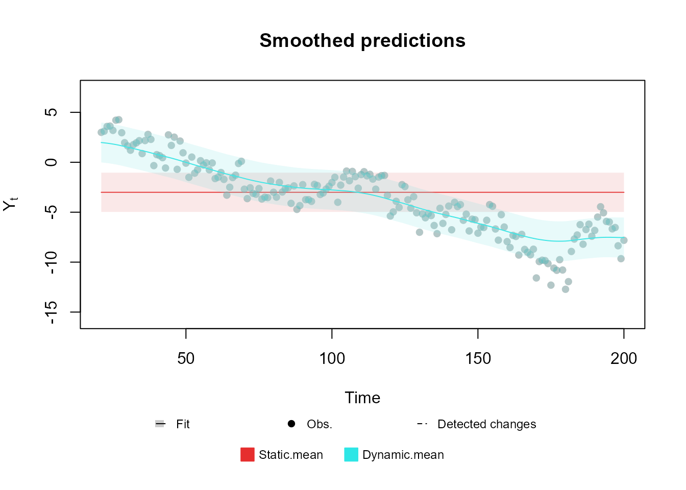

Table of contents
-
Creating the model structure: >
- A structure for polynomial trend models
- A structure for dynamic regression models
- A structure for harmonic trend models
- A structure for autoregresive models
- A structure for overdispersed models
- Handling multiple structural blocks
- Handling multiple linear predictors
- Handling unknown components in the planning matrix
- Special priors
-
Advanced examples:>
Creation of model structures
In this section we will discuss the specification of the model structure. We will consider the structure of a model as all the elements that determine the relation between our linear predictor and our latent states though time. Thus, the present section is dedicated to the definition of the following, highlighted equations from a general dynamic generalized model:
$$ \require{color} \begin{equation} \begin{aligned} Y_t|\eta_t &\sim \mathcal{F}\left(\eta_t\right),\\ g(\eta_t) &= {\color{red}\lambda_{t}=F_t'\theta_t,}\\ {\color{red}\theta_t }&{\color{red}=G_t\theta_{t-1}+\omega_t,}\\ {\color{red}\omega_t }&{\color{red}\sim \mathcal{N}_n(h_t,W_t)}. \end{aligned} \end{equation} $$
Namely, we consider that the structure of a model consists of the matrices/vectors , , , and .
Although we allow the user to manually define each entry of each of those matrices (which we do not recommend), we also offer tools to simplify this task. Currently, we offer support for the following base structures:
-
polynomial_block: Structural block for polynomial trends (see West and Harrison, 1997, Chapter 7). As special cases, this block has support for random walks and linear growth models. -
harmonic_block: Structural block for seasonal trends using harmonics (see West and Harrison, 1997, Chapter 8). -
regression_block: Structural block for (dynamic) regressions (see West and Harrison, 1997, Chapter 6 and 9). -
TF_block: Structural block for autoregressive components and transfer functions (see West and Harrison, 1997, Chapter 9 and 13). -
noise_block: Structural block for random effects dos Santos et al. (2024).
For the sake of brevity, we will present only the details for the
polynomial_block, since all other functions have very
similar usage (the full description of each block can be found in the
vignette, in the reference manual and in their respective help
pages).
Along with the aforementioned functions, we also present some auxiliary functions and operations to help the user manipulate created structural blocks.
In Subsections A structure for polynomial trend models, A structure for dynamic regression models, A structure for harmonic trend models, A structure for autoregresive models and A structure for overdispersed models introduce the several functions design to facilitate the creation of single structural blocks. In those sections we begin by examining simplistic models, characterized by a single structural block and one linear predictor, with a completely known matrix. Subsection Handling multiple structural blocks builds upon these concepts, exploring models that incorporate multiple structural blocks while maintaining a singular linear predictor. The focus shifts in Subsection Handling multiple linear predictors, where we delve into the specification of multiple linear predictors within the same model. In Section Handling unknown components in the planning matrix , the discussion turns to scenarios where includes one or more unknown components. Finally, Subsection Special priors provides a brief examination of functions used to define specialized priors.
A structure for polynomial trend models
polynomial_block(...,
order = 1, name = "Var.Poly",
D = 1, h = 0, H = 0,
a1 = 0, R1 = c(9, rep(1, order - 1)),
monitoring = c(TRUE, rep(FALSE, order - 1))
)
# When used in a formula
pol(order = 1, D = 0.95, a1 = 0, R1 = 9, name = "Var.Poly")Recall the notation introduced in Section Notation and revisited at the beginning
of this vignette. The polynomial_block function will create
a structural block based on West and Harrison (1997), chapter 7. The
pol function is a simplified version meant to be used
inside formulas in the kdglm function and has the same
syntax as the polynomial_block function. This involves the
creation of a latent vector
,
such that:
where .
Let’s dissect each component of this specification.
The order argument sets the polynomial block’s order,
correlating
with the value passed.
The optional name argument aids in identifying each
structural block in post-fitting analysis, such as plotting or result
examination (see Section Fitting and analysing
models).
The D, h, H, a1,
and R1 arguments correspond to
,
,
,
and
,
respectively.
D specifies the discount matrices over time. Its format
varies: a scalar implies a constant discount factor; a vector of size
(the length of the time series) means varying discount factors over
time; a
matrix indicates that the same discount matrix is given by
D and is the same for all times; a 3D-array of dimension
indicates time-specific discount matrices. Any other shape for
D is considered invalid.
h specifies the drift vector over time. If
h is a scalar, it is understood that the drift is the same
for all variables at all time. If h is a vector of size
,
then it is understood that the drift is the same for all variables, but
have different values for each time, such that each coordinate
of h represents the drift for time
.
If h is a
matrix, then we assume that the drift vector at time
is given by h[,t]. Any other shape for h is
considered invalid.
The argument H follows the same syntax as
D, since the matrix
has the same shape as
.
The argument a1 and R1 are used to define,
respectively the mean and the covariance matrix for the prior for
.
If a1 is a scalar, it is understood that all latent states
associated with this block have the same prior mean; if a1
is a vector of size
,
then it is understood that the prior mean
is given by a1. If R1 is a scalar, it is
understood that the latent states have independent priors with the same
variance (this does not imply that they will have independent
posteriors); if R1 is a vector of size
,
it is understood that the latent states have independent priors and that
the prior variance for the
is given by R1[i]; if R1 is a
matrix, it is understood that
is given by R1. Any other shape for a1 or
R1 are considered invalid.
The arguments D, h, H,
a1, and R1 can accept character values,
indicating that certain parameters are not fully defined. In such cases,
the dimensions of these arguments are interpreted in the same manner as
their numerical counterparts. For instance, if D is a
single character, it implies a uniform, yet unspecified, discount factor
across all variables and time points, with D serving as a
placeholder label. Should D be a vector of length
(the time series length), it suggests varying discount factors over
time, with each character entry in the vector (e.g., D[i])
acting as a label for the discount factor at the respective time point.
This logic extends to the other arguments and their various dimensional
forms. It’s crucial to recognize that if these arguments are specified
as labels rather than explicit values, the corresponding model block is
treated as “undefined,” indicating the absence of a key hyperparameter.
Consequently, a model with an undefined block cannot be fitted. Users
must either employ the specify.dlm_block method to replace
labels with concrete values or pass the value of the value of those
hyper-parameter as named values to the fit_model function
to systematically evaluate models with different values for these
labels. Section Tools for sensitivity
analysis elaborates on the available tools for sensitivity analysis.
Further information about both specify and
fit_model is available in the reference manual or through
the help function.
Notice that the user does not need to specify the matrix , since it is implicitly determined by the equation and the order of the polynomial block. Each type of block will define it own matrix , as such, the user does not need to worry about , except in very specific circumstances, where an advanced user may need a type of model that is not yet implemented.
The argument ... is used to specify the matrix
(see details in Subsection Handling
multiple linear predictors). Specifically, the user must provide a
list of named values which are arbitrary labels to each linear predictor
,
,
and its associated value represents the effect of the level
(see Eq. ) in this predictor.
For example, consider a polynomial block of order
,
representing a linear growth. If the user passes an extra argument
lambda (the naming is arbitrary) as
,
then the matrix
is created as:
Note that, as the polynomial block has order
,
it has
latent states,
and
.
While
does not affect the linear predictor lambda directly, it
serves as an auxiliary variable to induce a more complex dynamic for
.
Indeed, by Equation , we have that a second order polynomial block have
the following temporal evolution:
As such,
represents a growth factor that is added in
and smoothly changes overtime. Even more complex structures can be
defined, either by a higher order polynomial block or by one of the
several other types of block offered by the
kDGLM.
The specification of values associated to each predictor label is further illustrated in the examples further exhibited in this section.
Lastly, the argument monitoring shall be explained
later, in Subsection Intervention and
monitoring, which discusses automated monitoring and
interventions.
To exemplify the usage of this function, let us assume that we have a simple Normal model with known variance , in which is the mean parameter and the link function is such that . Let us also assume that the mean is constant over time and we have no explanatory variables, so that our model can be simply written as:
$$ \begin{aligned} Y_t|\theta_t &\sim \mathcal{N}_1\left(\eta_t, \sigma^2\right),\\ \eta_t &={\color{red}\lambda_{t}=\theta_t,}\\ {\color{red}\theta_t} &{\color{red}=\theta_{t-1}=\theta.} \end{aligned} $$
In this case, we have , , , and , for all . Assuming a prior distribution for , we can create the highlighted structure using the following code:
mean_block <- polynomial_block(eta = 1, order = 1, name = "Mean")Setting eta=1, we specify that there is a linear
predictor named eta, and that
.
Setting order = 1, we specify that
is a scalar and that
.
We can omit the values of a1 , R1,
D, h and H, since the default
values reflect the specified model. We could also omit the argument
order, since the default is
,
but we chose to explicit define it so as to emphasize its usage. The
argument name specifies a label for the created block; in
this case, we chose to call it “Mean”, to help identify its role in our
model.
Suppose now that we have an explanatory variable that we would like to introduce in our model to help explain the behavior of . We could similarly define such structure by creating an additional block such as:
polynomial_block(eta = X, name = "Var X")By setting eta=X, we specify that there is a linear
predictor called eta, and that
.
If
is a vector, then we would have
,
for each
,
such that
.
It should be noted that kDGLM has a specific structural
block designed for regressions, regression_block, but we
also allow any structural block to be used for a regression, by just
setting the value assigned to the predictor equal to the regressor
vector
.
The user can specify complex temporal dynamics for the effects of any co-variate. For instance, it could be assumed that a regressor has a seasonal effect on a linear predictor. This this could be accommodated by the insertion of the values of the regressor associated to a seasonal block. The use of seasonal blocks is illustrated in Section Space-time model hospital admissions from gastroenteritis.
So far, we have only discussed the creation of static latent effects,
but the inclusion of stochastic temporal dynamics is very
straightforward. One must simply specify the values of H to
be greater than
and/or the values of D to be lesser than
:
mean_block <- polynomial_block(eta = 1, order = 1, name = "Mean", D = 0.95)Notice that a dynamic regression model could be obtained by assigning
eta=X in the previous code line. Bellow we present a plot
of two simple trend models fitted to the same data: one with a static
mean and another using a dynamic mean.
In the following example we use the functions Normal,
fit_model and the plot method. We advise the
reader to initially concentrate solely on the application of the
polynomial_block. The functionalities and detailed usage of
the other functions and methods, Normal,
fit_model, and plot, will be explored in later
sections, specifically in Sections Creating the
model outcome: and Fitting and analysing
models:. The inclusion of these functions in the current example is
primarily to offer a comprehensive and operational code sample.

For an extensive presentation and thorough discussion of the
theoretical aspects underlying the structure highlighted in this
section, interested readers are encouraged to consult West and Harrison (1997), Chapters 6, 7, and 9.
Additionally, we strongly recommend that all users refer to the
associated documentation for more detailed information. This can be
accessed by using the help(polynomial_block) function or
consulting the reference manual.
A structure for dynamic regression models
regression_block(...,
max.lag = 0,
zero.fill = TRUE,
name = "Var.Reg",
D = 1,
h = 0,
H = 0,
a1 = 0,
R1 = 9,
monitoring = rep(FALSE, max.lag + 1)
)
# When used in a formula
reg(X, max.lag = 0, zero.fill = TRUE, D = 0.95, a1 = 0, R1 = 9, name = "Var.Reg")The regression_block function creates a structural block
for a dynamic regression with covariate
,
as specified in West and Harrison (1997), chapter 9. The
reg function is a simplified version meant to be used
inside formulas in the kdglm function and has the same
syntax as the regression_block function. When
max.lag is equal to
,
this function can be see as a wrapper for the
polynomial_block function with order equal to
.
When max.lag is greater or equal to
,
the regression_block function is equivalent to the
superposition of several polynomial_block functions with
order equal to
.
Specifically, if the linear predictor
is associated with this block, we can describe its structure with the
following equations:
where .
The usage of the regression_block function is quite
similar to that of the polynomial_block function, the only
differences being in the max.lag and zero.fill
arguments. The max.lag defines the maximum lag of the
variable
that has effect on the linear predictor. For example, if we define
max.lag as
,
we would be defining that
,
,
and
all have an effect on
,
such that
latent variables are created, each one representing the effect of a
lagged value of
.
Lastly, the zero.fill argument defines if the package
should take the value of
to be
when
is non-positive, i.e., if TRUE (default), the package
considers
,
for
.
If zero.fill is FALSE, then the user must
provide the values of
as a vector of size
(instead of
),
where
is the length of the time series that is being modeled, and the first
values of that vector will be taken as
.
The usage of the remaining arguments is identical to that of the
polynomial_block function, and can also be inferred by the
previous equation.
Here we present the code for fitting the following model:
where is a known covariate and is specified using a discount factor of .
regression <- regression_block(The_name_of_the_linear_predictor = X, D = 0.95)
outcome <- Poisson(lambda = "The_name_of_the_linear_predictor", data = data)
fitted.data <- fit_model(regression, outcome)
The detailed theory behind the structure discussed in this section can be found in chapters 6 and 9 from West and Harrison (1997).
A structure for harmonic trend models
harmonic_block(
...,
period,
order = 1,
name = "Var.Sazo",
D = 1,
h = 0,
H = 0,
a1 = 0,
R1 = 4,
monitoring = rep(FALSE, order * 2)
)
# When used in a formula
har(period, order = 1, D = 0.98, a1 = 0, R1 = 4, name = "Var.Sazo")This function will creates a structural block based on West and Harrison (1997), chapter 8, i.e., it creates a latent vector , so that:
where and .
Notice that the user does not need to specify the matrix
,
since it is implicitly determined by the order and the period of the
harmonic block, being a block diagonal matrix where each block is a
rotation matrix for an angle multiple of
,
such that, if period is an integer,
.
Notice that, when period is an integer, it represents the
length of the seasonal cycle. For instance, if we have a time series
with monthly observations and we believe this series to have an annual
pattern, then we would set the period for the harmonic
block to be equal to
(the number of observations until the cycle “resets”). For details about
the order of the harmonic block and the representation of seasonal
patterns with Fourier Series, see West and
Harrison (1997), chapter 8.
The natural usage of this block is for specifying harmonic trends for
the model, but it can also be used for explanatory variables with
seasonal effect on the linear predictor, for that, see the usage of the
regression_block and polynomial_block
functions.
Here we present a simply usage example for a harmonic block with period :
mean_block <- harmonic_block(
eta = 1,
period = 12,
D = 0.975
)Bellow we present a plot of a Poisson model with such structure:

The detailed theory behind the structure discussed in this section can be found in chapters 6, 8 and 9 from West and Harrison (1997).
A structure for autoregresive models
TF_block(
...,
order,
noise.var = NULL,
noise.disc = NULL,
pulse = 0,
name = "Var.AR",
AR.support = "free",
a1 = 0,
R1 = 9,
h = 0,
monitoring = TRUE,
D.coef = 1,
h.coef = 0,
H.coef = 0,
a1.coef = c(1, rep(0, order - 1)),
R1.coef = c(1, rep(0.25, order - 1)),
monitoring.coef = rep(FALSE, order),
a1.pulse = 0,
R1.pulse = 9,
D.pulse = 1,
h.pulse = 0,
H.pulse = 0,
monitoring.pulse = NA
)
# When used in a formula
TF(X, order = 1, noise.var = NULL, noise.disc = NULL, a1 = 0, R1 = 9, a1.coef = NULL, R1.coef = NULL, a1.pulse = 0, R1.pulse = 4, name = "Var.AR")
# Wrapper for the autoregressive structure
AR(order = 1, noise.var = NULL, noise.disc = NULL, a1 = 0, R1 = 9, a1.coef = NULL, R1.coef = NULL, name = "Var.AR")This function creates a structural block based on West and Harrison (1997), chapter 9, i.e., it creates a latent state vector , an autoregressive (AR) coefficient vector and a pulse coefficient vector , where is the number of pulses (discussed later on) so that:
where:
and , called pulse matrix, is a known matrix.
Notice that the user does not need to specify the matrix , since it is implicitly determined by the order of the Tranfer Function (TF) block and the equations above, although, as the reader might have noticed, that evolution will always be non-linear. Since the method used to fit models in this package requires a linear evolution, we use the approach described in West and Harrison (1997), chapter 13, to linearize the previous evolution equation. For more details about the usage of autoregressive models and transfer functions in the context of DLM’s, see West and Harrison (1997), chapter 9.
It is easy to understand the meaning of most arguments of the
TF_block function based on the previous equations, but some
explanation is still needed for the AR.support argument,
plus the arguments related with the so called pulse. We do
advise all users to consult the associated documentation for more
details (see help(TF_block) or the reference manual).
The AR.support is a character string, either
"constrained" or "free". If
AR.support is "constrained", then the AR
coefficients
will be forced to be on the interval
,
otherwise, the coefficients will be unrestricted. Beware that, under no
restriction on the coefficients, there is no guarantee that the
estimated coefficients will imply in a stationary process, furthermore,
if the order of the TF block is greater than 1, then the restriction
imposed when AR.support is equal to
"constrained" does NOT guarantee that the
process will be stationary, as such, the user is not allowed to use
constrained parameters when the order of the block is greater than
.
To constrain
to the interval
,
we apply the inverse Fisher transformation, also known as the hyperbolic
tangent function.
The pulse matrix
is informed through the argument pulse, with the dimension
of
being implied by the number of columns in
.
It is important to notice that the package expects that
will inform the pulse value for each time instance, interpreting each
column as a distinct pulse with an associated coordinate of
.
Note that when the pulse is absent, , the TF block is equivalent to a autoregressive block.
Finally, we can summarize the usage of the TF_block
function as follows:
-
a1,R1are the parameter for the prior for the accumulated effects ; -
noise.var,noise.discandhdefine the mean and variance of random fluctuations of through time; -
a1.coef,R1.coefare the parameter for the prior for the coefficients ; -
h.coef,H.coefandD.coefdefine the mean and variance of random fluctuations of through time; -
a1.pulse,R1.pulseare the parameter for the prior for the pulse coefficient ; -
h.pulse,H.pulseandD.pulsedefine the mean and variance of random fluctuations of through time; -
pulseis the pulse matrix ; -
AR.supportdefines the support for the AR coefficients .
Bellow we present the code for a simply block with :
mean_block <- TF_block(
eta = 1,
order = 1,
noise.var = 0.1
)Finally we present a plot of a Gamma model with known shape and a AR structure for the mean fitted with simulated data. We will refrain to show the code for fitting the model itself, since we will discuss the tools for fitting in a section of its own.
, , 1
eta
[1,] 1
Some comments about autoregressive models in the Normal family
The user may have notice that the autoregressive block described above is a little different from what is most common in the literature. Specifically, we do not assume that the observed data itself () follows an autoregressive evolution, but instead does. This approach is a generalization of the usual autoregressive model, indeed, if we have that follows an usual AR(k), such that:
then, this model can also be written as:
such that this model can be described
using the TF_block function.
More generally, if we have that , where is a distribution family contained in the exponential family and indexed by , then we have that:
It is important to note that there is some caveats about the first
specification (the usual one) and the more general one presented above.
As the reader will see further bellow, we offer, as a particular case,
the Normal distribution with both unknown mean and observational
variance, where we can specify predictive strucutre for
both the mean and the observational variance. In this
model, it does matter if the evolution error is associated with the
observation equation or the evolution equation (we cannot specify
predictive structure for former, but to the latter we can). For such
cases, we recommend the use of the regression_block
function instead of the TF_block.
Here we present an example of the specification of an AR(k) using the
regression_block function for a time series
of length
:
regression_block(
mu = c(0, Y[-T]),
max.lag = k
)In the Advanced Examples section we will provide a wide range of examples, including ones with the aforementioned structures. In particular, we will present the code for some usual (yet different from what we discussed) forms of AR, including the following model:
A structure for overdispersed models
noise_block(..., name = "Noise", D = 0.99, R1 = 1)
# When used in a formula
noise(name = "Noise", D = 0.99, R1 = 0.1, H = 0)This function will creates a sequence of independent latent variables based on the discussions presented in dos Santos et al. (2024), such that:
Notice that the user do not need to specify the matrix , since it is implicitly determined by the equations above, such that for all .
It is easy to see the correspondence between most of the arguments of
the noise_block function and their respective meaning in
the block specification, while the remaining ones follow the same usage
seen in the previous block functions (see the
polynomial_block function).
As the user must have noticed, this block makes no sense on its own, since it has barely any capability of learning patterns. But, we is shown in the next subsection, structural blocks can be combined with each other, such that the noise block would be only one of several other structural blocks in a model.
To exemplify the utility of this structural block, let us assume we want to model the following (simulated) time series of counts:

Since the data is a counting, its natural to propose a Poisson model, such that:
Bellow we present that model fitted using the kDGLM
package:
level <- polynomial_block(
rate = 1,
order = 3,
D = 0.95
)
fitted.data <- fit_model(level,
"Model 1" = Poisson(lambda = "rate", data = data)
)
plot(fitted.data, lag = 1, plot.pkg = "base")
Notice that the data at the middle of the observed period is overdispersed, such that a Poisson model cannot properly address the uncertainty. One could proposed the usage of a Normal model which, indeed, could capture the uncertainty in the middle, but notice that the data at the beginning and at the end of the series has very low values, such that a Normal model would be inappropriate. In such scenario, a better approach would be to add an noise component to the linear predictor, such that it can capture the overdispersion:
level <- polynomial_block(
mu = 1,
order = 3,
D = 0.95
)
noise <- noise_block(
mu = 1
)
fitted.data <- fit_model(level, noise,
"Model 2" = Poisson(lambda = "mu", data = data)
)
plot(fitted.data, lag = 1, plot.pkg = "base")
It is relevant to point out that the choice of R1 can
affect the final fit, as such, we highly recommend the user to perform a
sensibility analysis to help specify the value of R1.
Lastly, as we will see latter on, the noise block can also be useful to model the dependency between multiple time series.
For a more detailed discussion of this type of blocks, see dos Santos et al. (2024).
Handling multiple structural blocks
n the previous subsections, we discussed how to define the structure
of a model using the functions polynomial_block,
regression_block, harmonic_block,
TF_block and noise_block. Each of these
functions results in a single structural block. Generally, the user will
want to mix multiple types of structures, each one being responsible to
explain part of the outcome
.
For this task, we introduce an operator designed to combine structural
blocks by superposition principle (see West and Harrison, 1997, sec. 6.2),
as follows.
Consider the scenario where one wishes to superimpose structural blocks; for instance: trend, seasonal and regression components (). A general overlaid structure is given by the following specifications:
where represents a block diagonal matrix such that its diagonal is composed of ; is the vector obtained by the concatenation of the vectors corresponding to each structural block; and is obtained as follows: if a single linear predictor is considered in the model, is a line vector concatenating $F_t^1,…, F_t^p k>1$, which will be seen in the next section), the design matrix associated to structural block , , has dimension $n_i k $ and is a matrix, obtained by the row-wise concatenation of the matrices , where .
In this scenario, to facilitate the specification of such model, we
could create one structural block for each
,
,
and
,
,
and then “combine” all blocks together. The kDGLM
package allows this operation through the function
block_superpos or, equivalently, through the +
operator:
block_1 <- ...
.
.
.
block_n <- ...
complete_structure <- block_superpos(block_1, ..., block_n)
# or
complete_structure <- block_1 + ... + block_nFor a very high number
of structural blocks, the use of block_superpos is slightly
faster. To demonstrate the usage of the + operator, suppose
we would like to create a model using four of the structures presented
previously (a polynomial trend, a dynamic regression, a harmonic trend
and an AR model). We could do so with the following code:
poly_subblock <- polynomial_block(eta = 1, name = "Poly", D = 0.95)
regr_subblock <- regression_block(eta = X, name = "Regr", D = 0.95)
harm_subblock <- harmonic_block(eta = 1, period = 12, name = "Harm")
AR_subblock <- TF_block(eta = 1, order = 1, noise.var = 0.1, name = "AR")
complete_block <- poly_subblock + regr_subblock + harm_subblock + AR_subblockIn the multiple regression context, that is, if more than one
regressor should be included in a predictor, the user must specify
different regression sub blocks, one for each regressor, and apply the
superposition principle to these blocks. Thus, in the previous code
lines, X is a vector with
observations of a regressor
,
already defined in an R object in the current
environment and cannot be a matrix of covariates. Ideally, the user
should also provide each block with a name to help identify them after
the model is fitted, but, if the user does not provide a name, the block
will have the default name for that type of block. If different blocks
have the same name, an index will be automatically added to the
variables with conflicting labels based on the order that the blocks
were combined. Note that the automatic naming might make the analysis of
the fitted model confusing, specially when dealing with a large number
of latent states. With that in mind, we strongly
recommend the users to specify an intuitive name for each structural
block.
When integrating multiple blocks within a model, it’s crucial to
understand how their associated design matrices, denoted as
for each block, are combined. These matrices are concatenated
vertically, one below the other. Consequently, since the predictor
vector
is calculated as
,
the influence of each block on
is cumulative. In our previous code example, we introduced a linear
predictor named eta. In this context, the operations
performed in lines 1, 5, and 7
(corresponding to polynomial_block,
regression_block, and TF_block, respectively),
are represented as
;
while in line 3 (corresponding to
regression_block), the operation is
.
It’s important to note that each block initially defines
eta independently. However, when these blocks are combined,
their respective equations are merged. As a result, the complete
structure in line 9 can be expressed as:
This expression illustrates how the contributions from each individual block are aggregated to form the final model. This methodology allows for the flexible construction of complex models by combining simpler components, each contributing to explain a particular facet of the process .
Handling multiple linear predictors
As the user may have noticed, more then one argument can be passed in
the ... argument. Indeed, if the user does so, several
linear predictors will be created in the same block (one for each unique
name), all of which are affected by the associated latent state. For
instance, take the following code:
polynomial_block(lambda1 = 1, lambda2 = 1, lambda3 = 1) # Common factorThe code above creates linear predictors , and and a design matrix , such that:
Note that the latent state is the same for all linear predictors , i.e., is a shared effect among those linear predictors which could be used to induce association among predictors. The specification of independent effects to each linear predictor can be done by using different blocks to each latent state:
polynomial_block(lambda1 = 1, order = 1) + # theta_1
polynomial_block(lambda2 = 1, order = 1) + # theta_2
polynomial_block(lambda3 = 1, order = 1) # theta_3When the name of a linear predictor is missing from a particular block, i.e., the name of a linear predictor was passed as an argument in one block, but is absent in another, it is understood that particular block has no effect on the linear predictor that is absent, such that the previous code would be equivalent to:
# Longer version of the previous code for the sake of clarity.
# In general, when a block does not affect a particular linear predictor, that linear predictor should be ommited when creating the block.
polynomial_block(lambda1 = 1, lambda2 = 0, lambda3 = 0, order = 1) + # theta_1
polynomial_block(lambda1 = 0, lambda2 = 1, lambda3 = 0, order = 1) + # theta_2
polynomial_block(lambda1 = 0, lambda2 = 0, lambda3 = 1, order = 1) # theta_3As discussed in the end of Subsection Handling multiple structural blocks, the effect of each block over the linear predictors will be added to each other. As such both codes will create linear predictors, such that:
Remind the syntax presented in the first illustration of the current section, which guides the creation of common factors among predictors. One can use multiple blocks in the same structure to define linear predictors that share some (but not all) of their components:
polynomial_block(lambda1 = 1, order = 1) + # theta_1
polynomial_block(lambda2 = 1, order = 1) + # theta_2
polynomial_block(lambda3 = 1, order = 1) + # theta_3
polynomial_block(lambda1 = 1, lambda2 = 1, lambda3 = 1, order = 1) # theta_4: Common factorrepresenting the following structure:
The examples above all have very basic structures, so as to not overwhelm the reader with overly intricate models. Still, the kDGLM package is not limited to in any way by the inclusion of multiple linear predictors, such that any structure one may use with a single predictor can also be used with multiple linear predictors. For example, we could have a model with linear predictors, each one having a mixture of shared components and exclusive components:
#### Global level with linear growth ####
polynomial_block(lambda1 = 1, lambda2 = 1, lambda3 = 1, D = 0.95, order = 2) +
#### Local variables for lambda1 ####
polynomial_block(lambda1 = 1, order = 1) +
regression_block(lambda1 = X1, max.lag = 3) +
harmonic_block(lambda1 = 1, period = 12, D = 0.98) +
#### Local variables for lambda2 ####
polynomial_block(lambda2 = 1, order = 1) +
TF_block(lambda2 = 1, pulse = X2, order = 1, noise.disc = 1) +
harmonic_block(lambda2 = 1, period = 12, D = 0.98, order = 2) +
#### Local variables for lambda3 ####
polynomial_block(lambda3 = 1, order = 1) +
TF_block(lambda3 = 1, order = 2, noise.disc = 0.9) +
regression_block(lambda3 = X3, D = 0.95)Now we focus on the replication of structural blocks, for which we
apply block_mult function and the associated operator
*. This function allows the user to create multiple blocks
with identical structure, but each one being associated with a different
linear predictor. The usage of this function is as simple as:
base.block <- polynomial_block(eta = 1, name = "Poly", D = 0.95, order = 1)
# final.block <- block_mult(base.block, 4)
# or
# final.block <- base.block * 4
# or
final.block <- 4 * base.blockWhen replicating blocks, it is understood that each copy of the base block is independent of each other (i.e., they have their own latent states) and each block is associated with a different set of linear predictors. The name of the linear predictors associated with each block are taken to be the original names with an index:
final.block$pred.names[1] "eta.1" "eta.2" "eta.3" "eta.4"Naturally, the user might want to rename the linear predictors to a more intuitive label. For such task, we provide the function:
final.block <- block_rename(final.block, c("Matthew", "Mark", "Luke", "John"))
final.block$pred.namesHandling unknown components in the planning matrix
In some situations the user may want to fit a model such that:
in other words, it may be the case that the planning matrix contains one or more unknown components. This idea may be foreign when working with only one linear predictor, but if our observational model has several predictors it could make sense to have shared effects among predictors. Besides, this construction is also natural when modeling multiple time series simultaneously, such as when dealing with correlated outcomes or when working with a compound regression. All those cases will be explored in the Advanced Examples section of the vignette. For now, we will focus on how to specify such structures, whatever their use may be.
For simplicity, let us assume that we want to create a linear
predictor
such that
.
Then the first step would be to create a linear predictor associated
with
(which we will call phi, although the user may call it
whatever it pleases the user):
phi_block <- polynomial_block(phi = 1, order = 1)Notice that we are creating a linear predictor and a latent state such that . Also, it is important to note that the structure for could be any other structural block (harmonic, regression, auto regression, etc.).
Now we can create a structural block for :
theta_block <- polynomial_block(lambda = "phi", order = 1)The code above creates a linear predictor
and a latent state
such that
.
Notice that the ... argument of any structural block is
used to specify the planning matrix
,
specifically, the user must provide a list of named values, where each
name indicates a linear predictor
and its associated value represent the effect of
in this predictor. When the user pass a string in ..., it
is implicitly that the component of
associated with
is unknown and modeled by the linear predictor labelled as the passed
string.
Lastly, as one could guess, it is possible to establish a chain of components in in order to create an even more complex structure. For instance, take the following code:
polynomial_block(eta1 = 1, order = 1) +
polynomial_block(eta2 = "eta1", order = 1) +
polynomial_block(eta3 = "eta2", order = 1)In the first line we create a linear predictor such that . In the second line we create another linear predictor such that . Then we create a linear predictor such that .
To fit models with non-linear components in the and/or matrices, we use the Extended Kalman Filter (Kalman, 1960; West and Harrison, 1997).
Special priors
As discussed in Subsection A structure for polynomial trend models, the default prior for the polynomial block—as well as for other blocks—assumes that the latent states are independent with a mean and a variance of . Users have the flexibility to modify this prior to any combination of mean vector and covariance matrix, although the latent states of different blocks are always assumed to be independent. It is important to note that this independence applies only to the prior distribution; subsequent updates may induce correlations between the latent states.
While this prior setup may be appropriate for a broad range of
applications, there may be instances where a user needs to apply a joint
prior for latent states across different blocks. For example, if a
similar model has previously been fitted to another dataset, an analyst
might wish to integrate information from this prior model into the new
fitting. To facilitate the specification of a joint prior for any set of
latent states, the kDGLM package offers the
joint_prior function:
joint_prior(block, var.index = 1:block$n, a1 = block$a1[var.index], R1 = block$R1[var.index, var.index])The joint_prior function accepts a
dlm_block object and returns the same object with a
modified prior.
The block argument is a dlm_block object.
The syntax of this function is designed to facilitate the use of the
pipe operator (either |> or %>%),
allowing for seamless integration into piped sequences. For example:
polynomial_block(mu = 1, order = 2, D = 0.95) |>
block_mult(5) |>
joint_prior(a1 = prior.mean, R1 = prior.var)
# assuming the objects prior.mean and prior.var are defined.The var.index argument is optional and indicates the
indexes of the latent states for which the prior distribution will be
modified.
The a1 and R1 arguments represent,
respectively, the mean vector and the covariance matrix for the latent
states that the user wishes to modify the prior for.
The user may also want to specify some special priors that impose a certain structure for the data. For instance, the user may believe that a certain set of latent state sum to or that there is a spacial structure to them. This is specially relevant when modelling multiple time series, for instance, lets say that we have series , , such that:
Similarly, one could want to specify a CAR prior (Banerjee et al., 2014; Schmidt and Nobre, 2018) for the variables , if the user believes there is spacial autocorrelation.
For these scenarios, the kDGLM package provides
functions to facilitate the specification of special priors for
structural blocks, such as the zero_sum_prior and the
CAR_prior. Their general usage is analogous to the
joint_prior function. Details on these functions will be
omitted in this document for the sake of brevity. For comprehensive
usage instructions, please refer to the vignette or the associated
documentation.